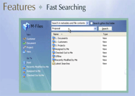

Digitized data of the records are maintained on a central Record Server with a back-up server for data safety.
This record server is linked through the existing LAN Network to the end users who can retrieve data from their units.
The files are then converted into a structured archival file of PDF or JPEG, TIFF format and stored on various storage media and also loaded on a dedicated server.
Cropping and Cleaning of images (removing black noises around the text) Skew correction to make the image straight) De-Speckle (removing of small dots between the texts).
Creation of Meta Data of these digital files on the basis of various parameters of the filing system adopted in the Government like viz (1) Subject Head;(2) Minor Head;(3) Year of Opening of the file; (4) Sections/Units where the file was created and (5) Subject of the file.
Introducing search facility of the digital files using any or all the search parameters mentioned above.
Introducing security features for avoiding any tampering/misuse of records
Loading the digitized records onto a dedicated server for hosting the Records Database of the Ministry and making the full function database of digital files available to the concerned creator/user of the records through a dedicated network for their immediate retrieval.
File Management System

- Search option is quite simple as one can easily retrieve data, all the data saved is categorized very systematically
- Documents can be categorized depending upon the requirement and as per the project scope
- Security features has been kept so that one can only access the data if access has been provided to the respective user.
- We can provide different level of access for the same document or file.
- One can also look for the history of the document, like who modified in the past.